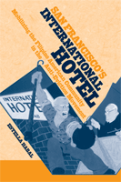

<body bgcolor="#FFFFFF" text="#000000" link="#0000FF" vlink="#CC0000" alink="#CC0000"><center><hr width="350" size="1" align="center" noshade>How a protest galvanized a cultural identity for Filipino Americans<hr width="350" size="1" align="center" noshade><p><a href="https://cdcshoppingcart.uchicago.edu/Cart/ChicagoBook.aspx?ISBN=9781592134458&&PRESS=temple" target="_top">Buy this book!</a> | <a href="https://cdcshoppingcart.uchicago.edu/Cart/Cart.aspx?PRESS=temple" target="_top">View Cart</a> | <a href="https://cdcshoppingcart.uchicago.edu/Cart/Cart.aspx?PRESS=temple" target="_top">Check Out</a></p><p></p></center><!--none//--><h1>San Francisco's International Hotel</h1>
<H2>Mobilizing the Filipino American Community in the Anti-Eviction Movement</H2>
<h3>Estella Habal</h3>
<P>cloth 1-59213-445-9 $70.50, Jun 07, <FONT COLOR=#990033>Available</FONT>
<br>paper 1-59213-446-7 $29.95, <FONT COLOR=#990033>Available</FONT>
<br>Electronic Book 1-59213-447-5 $29.95 <FONT COLOR=#990033>Available</FONT>
<BR> 256 pp
6x9
15&nbsp;halftones
</P><BLOCKQUOTE><I>"While other studies have treated the International Hotel struggle in terms of the politics of urban renewal, this book makes clear the distinctly Filipino elements of the story, effectively describing the worlds of the elderly Filipino 'manong' tenants and the youthful student and immigrant radicals who rallied to their side. In these respects, the book breaks new ground."</i>
<br><b>&#151Barbara M. Posadas</b>, Professor of History, Northern Illinois University</I></BLOCKQUOTE>
<p>The struggle to save the International Hotel, in the San Francisco neighborhood known as Manilatown, culminated in 1977 with the eviction of elderly tenant activists. Many of them were Filipino bachelors who had emigrated to the U.S. in the 1920s and 1930s for menial labor. Each evicted tenant was accompanied by at least one young activist who had come to find their roots in the lives of the "manongs" (respected elders).
<p>
<i>San Francisco's International Hotel</i> is part history and part memoir. In telling this compelling story, Estella Habal features her own memories of the Anti-Eviction Movement, focusing on the roles of Filipino Americans and their participation in both the anti-eviction protests and the nascent Asian American movement. She rounds out the narrative with a variety of sources, including interviews with other participants, the notes of insiders, and official reports.
<p>
A new International Hotel was finally built on the site. It commemorates the residents and activists who fought for low-income housing for the elderly and their right to remain in their own community. The new hotel houses the International Hotel Manilatown Center, keeping the memory of the First Filipino immigrants alive.
<BR>&nbsp;<h2>Excerpt</h2><P>Excerpt available at <a href="http://www.temple.edu/tempress">www.temple.edu/tempress</a></p>
<BR>&nbsp;<h2>Reviews</h2>
<p><I>"A terrific book...Habal presents the case from the perspective of an insider, yet is objective enough not to allow her deep involvement distort the complex political discussion and analysis. She weaves together nicely the specific struggle to save the building and avoid displacing its inhabitants within the complexity of city politics and the legal system. At the same time, she brings to the fore the parallel struggle of the Filipino community to assert and create an identity for itself."</I>
<br>&#151<b>Chester Hartman</b>, co-editor of <i>A Right to Housing</i> (Temple).
<p><i>"</i>[San Francisco’s International Hotel]<i> is both testament and tribute to a determined group of Filipino American men and women who took on corporate and government bigwigs and, against all odds, eventually won. What emerges is a story of universal struggle – across arbitrary ethnic, gender and class lines – the ultimate right for every human being to have fair access to decent, affordable housing, to establish a home for once and for all."</i> <br>&#151;<b><i>The San Francisco Chronicle</i></b>
<p><i>“This book is a compelling account of community resistance that has become a milestone event in the history of Filipinos in America.”
</i> <br>&#151;<b><i>Filipinas Magazine</i></b>
<p><i>"Habal’s work is participant history at its best. Only someone writing from an insider’s vantage point could so vividly capture the psychological and political impact on all sides when young Filipinos encountered and then struggled together with Filipino elders…Only someone immersed in the culture of the hotel tenants and their supporters could take us inside the complex gender, race, and generational dynamics of this fight….Habal explores debates and conflicts among the tenants and within the Left with a tremendously deft balance of solidarity, frank evaluation and self-criticism. The quality of this book whets the reader’s appetite for more…. [T]here is much to be learned from this book for present and future battles."
</i><br>&#151;<b><i>make/shift</i></b>
<p><i>"Estella Habal's highly personal and moving account of this flashpoint of Asian American movement of the 1960s and 1970s is more than simply a story about the besieged Filipino and Chinese residents of a San Francisco hotel and their fight against eviction. This book is a social and political history of a community, a neighborhood, and a city in transition. Habal writes with the passion of an activist through the lens of a historian. She provides an intimate yet critical insider's view of the struggle for the "I-Hotel." Given the dearth of scholarship on the Asian American movements of the 1970s and post-1965 Filipino American history in general, Habal's book is a major contribution." </I>
<br>&#151<b><i>The Journal of American Ethnic History</b></i>
<p><i>"[Habal's] analysis of the shifting alliances among local politicians, tenant rights groups, and the I-Hotel leadership is particularly insightful as is her analysis of [the Union of Democratic Filipinos].... Habal has provided an invaluable study of an important movement struggle."
</i> <br>&#151;<b><i>Journal of American History</i></b>
<p><i>"This history of the violent 1977 eviction...brings together urban and Asian American history in its narrative of a poignant struggle for social justice."</i> <br>&#151;<b><i>Southern California Quarterly</i></b>
<p><i>"</i>San Francisco's International Hotel<i>...documents a significant piece of Filipino American history and sets it against the backdrop of urban housing politics, coalitional activism, and the struggles of a cohort of elderly tenants, student radicals, and civic allies.... Because Habal writes as if there is no distinction between the personal and the political, she catches the widest possible audience. Readers have the benefit of a personalized eyewitness account as Habal explores a number of difficult political struggles.... [T]he most decisive struggle--the one that propels this book in the most significant ways--was fought over what to do with the weak and powerless in the face of corporate pressure."</i> <br>&#151;<b><i>Asian Affairs</i></b>
<p><i>"Habal appears to have been uniquely positioned to not only document the unfolding campaign, but to keep track of the conflicts, negotiations, and happenstances that defined the collective identities and claims of the many participants....With her personal archive of photographs, documents, and notes, supplemented by years of post-eviction involvement in the community and later interviews with key participants, Habal provides far more than a history of events. She has written a history of collective identity mobilization, virtual power, and popular politics. Her own interests and recollections add depth to the study without devolving into a plea for the cause or an ego project. Her personal voice is refreshing and honest.... </i>San Francisco's International Hotel<i> is a valuable source. "</i> <br>&#151;<b><i>Mobilization</i></b>
<BR>&nbsp;<h2>Contents</h2><P>
Acknowledgements<br>
Acronyms<br>
Chronology of Legal and Political Events
<br>
Introduction<br>
"Coming Home to a Fresh Crop of Rice"
<p>
Chapter 1<br>
Manilatown, Manongs, and the Student Radicals
<br>
Chapter 2<br>
A Home or a Parking Lot: Human Rights vs. Property Rights, 1968-1969
<br>
Chapter 3<br>
Peace with a Lease, 1969-1974
<br>
Chapter 4<br>
The Tiger Leaps: Fighting the Four Seas Investment Corporation, 1974-1977
<br>
Chapter 5<br>
"Makibaka! Dare to Struggle!" The IHTA and the KDP, 1977
<br>
Chapter 6<br>
People's Power vs. Propertied Elites, 1977
<br>
Chapter 7<br>
The Fall of the I-Hotel, 1977-1979
<br>
Conclusion:<br>
The Rise of the I-Hotel, 1979-2005
<br>
End Notes
<br>
Bibliography
</P><BR>&nbsp;<H2>About the Author(s)</H2>
<table><tr><td valign="top"><img src="/tempress/authors/1820_au.gif" height="90" width="75"></td><td width="100%" valign="middle"><p><b>Estella Habal</b> is Assistant Professor of Asian American Studies, Department of Social Science, San Jose State University, and a member of the Board of Directors, Manilatown Heritage Foundation.</P></td></tr></table>
<BR><H2>Subject Categories</H2>
<p><A HREF="/tempress/asian_amer.html" TARGET="_top">Asian American Studies</a>
<BR><A HREF="/tempress/american.html" TARGET="_top">American Studies</a>
<BR><A HREF="/tempress/urban.html" TARGET="_top">Urban Studies</a>
</p>
<BR><h2 class="inpageheading">In the series</H2>
<P><I><a href="http://www.temple.edu/tempress/asam_history.html" onMouseOver="window.status='Click for other books in this series!'; return true;" onMouseOut="window.status=''; return true;" target="_top">Asian American History and Culture</a></i>, edited by K. Scott Wong, Linda Trinh Võ, and Cathy Schlund-Vials.
</p><p>Founded by Sucheng Chan in 1991, the <I>Asian American History and Culture</I>, series has sponsored innovative scholarship that has redefined, expanded, and advanced the field of Asian American studies while strengthening its links to related areas of scholarly inquiry and engaged critique. Like the field from which it emerged, the series remains rooted in the social sciences and humanities, encompassing multiple regions, formations, communities, and identities. Extending the vision of founding editor Sucheng Chan and emeriti editor Michael Omi and David Palumbo-Liu, series editors K. Scott Wong, Linda Trinh Võ, and Cathy Schlund-Vials continue to develop a foundational collection that embodies a range of theoretical and methodological approaches to Asian American studies.</p>
<p align="center"><a href="https://cdcshoppingcart.uchicago.edu/Cart/ChicagoBook.aspx?ISBN=9781592134458&&PRESS=temple" target="_top">Buy this book!</a> | <a href="https://cdcshoppingcart.uchicago.edu/Cart/Cart.aspx?PRESS=temple" target="_top">View Cart</a> | <a href="https://cdcshoppingcart.uchicago.edu/Cart/Cart.aspx?PRESS=temple" target="_top">Check Out</a></p><p><font face="Arial" size="1"><a href="copyright.html" onMouseOver="window.status='Web Copyright Policy';return true;" onMouseOut="window.status=''" title="Web Copyright Policy">&copy;</a> 2015 <a href="http://www.temple.edu" target="new" onMouseOver="window.status='Link to Temple University home page';return true;" onMouseOut="window.status=''" title="Link to Temple University home page">Temple University</a>. All Rights Reserved. http://www.temple.edu/tempress/titles/1820_reg.html</font></p>